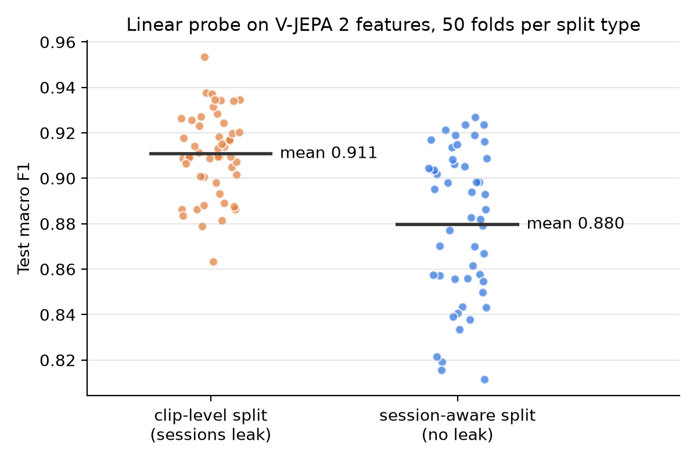

Reconhecendo manobras de surf em vídeo
Detecção do surfista, um modelo de vídeo congelado e uma linha do tempo que diz qual manobra aconteceu e quando.
Fabricio Guimarães
Visão Computacional (PPGTI3007), Prof. Helton Maia
PPgTI/UFRN, 2026.2
Um juiz olha corpo e prancha por dois ou três segundos
Por que é difícil:
- o surfista ocupa uma parte pequena do quadro;
- a câmera acompanha, aproxima e treme;
- água e spray escondem o corpo;
- duas manobras podem diferir só no jeito como a virada acontece.
Objetivo: vídeo de entrada, linha do tempo de saída. Por exemplo: 0:12 take-off, 0:15 cutback.
1.062 clipes de campeonato, de cerca de 3 segundos
Dataset público Surf Maneuver Recognition (Hugging Face, Apache 2.0): imagens laterais de campeonato, já cortadas em clipes de uma manobra.
Duração mediana de 2,8 s. Quatro vezes mais roller que take-off, então a métrica é o macro F1: a média do acerto de cada manobra, para a classe grande não esconder as pequenas.
O teste tinha questões que o modelo já tinha visto
- Sessões misturadas. Clipes com números vizinhos são da mesma sessão: mesmo surfista, praia e câmera. Na divisão original, 46% dos vizinhos caem em lados diferentes.
- Quase-duplicatas. Comparando quadros com o DINOv2, achei cópias do mesmo clipe com outra cor ou marca d'água, uma no treino e outra no teste.
- Rótulos conflitantes. 3 vídeos guardados em duas manobras ao mesmo tempo. Removidos.
Correção: agrupar os clipes em 36 sessões e dividir por sessão inteira. Cada sessão fica de um lado só.
Validação com 85 clipes. Na divisão original, 34 das 36 sessões estavam espalhadas entre treino, validação e teste.
Do vídeo à linha do tempo
- Janela deslizante2,8 s, avançando 0,7 s; 16 quadros por janela
- YOLO26acha o surfista em cada quadro e descarta detecções soltas
- Recortequadrado fixo em volta da trajetória do surfista
- V-JEPA 2modelo de vídeo da Meta, congelado: 8 fatias de tempo × 1.024 números
- Sonda linearregressão logística, a única parte treinada
- Rótulomanobra, sem manobra ou filmagem estranha, juntado em segmentos
Com só ~1.000 clipes, treinar um modelo de vídeo inteiro decoraria os exemplos. Congelar o V-JEPA 2 e treinar só a camada final leva segundos e generaliza melhor.
Medido 50 vezes, o vazamento infla o resultado em 3 pontos
| divisão | macro F1 (50 folds) |
|---|---|
| aleatória por clipe | 0,911 ± 0,018 |
| por sessão | 0,880 ± 0,033 |
- A diferença apareceu em 10 de 10 repetições (Mann-Whitney, p = 7×10⁻⁷).
- Na divisão por sessão o resultado varia quase o dobro: depende de quais praias o modelo nunca viu.
- O
StratifiedGroupKFolddo scikit-learn gerou só 7 divisões distintas em 50. Escrevi um divisor próprio.

A ordem temporal não era o que faltava
A maior confusão era cutback com roller. Hipótese: falta a ordem do movimento, porque a sonda linear tira a média das 8 fatias.
Teste controlado: uma sonda de atenção que lê as fatias em sequência, e a mesma sonda sem informação de ordem. Cinco treinos de cada.
As duas melhoram 6 pontos e empatam entre si. O ganho vem de juntar as fatias com atenção, não da ordem. Hipótese errada, e é para isso que serve o controle.
| classificador | macro F1 | F1 cutback |
|---|---|---|
| sonda linear (média das fatias) | 0,856 | 0,725 |
| atenção sem ordem | 0,911 ± 0,017 | 0,844 |
| atenção com ordem | 0,921 ± 0,025 | 0,873 |
O modelo olha para o surfista, não para a praia
- Recortar o surfista melhora todas as manobras. Apagar o surfista derruba 20 pontos.
- O take-off não é atalho de cena. Ele acerta até com fotos paradas (0,899) pela postura: deitado, levantando.

Fora do estilo de campeonato, ele erra com 99% de certeza
| filmagem | sem filtro | barrado |
|---|---|---|
| lateral, parecida com campeonato | take-off certo, depois plausível | 40–73% |
| close em câmera lenta | take-off, 0,9–1,0 ✗ | 100% |
| vertical (Reels) | take-off / roller ✗ | 100% |
| drone, de cima | take-off, 0,99 ✗ | 100% |
| kitesurf (nem é surf) | roller, 0,99 ✗ | 100% |
A confiança do softmax não avisa. A distância aos 10 clipes de treino mais parecidos avisa: barra todas essas filmagens.
Na minha própria onda, filmada da areia em Natal: quase tudo barrado, e um trecho marcado como cutback numa virada parecida com um.
Demonstração
Doze clipes do conjunto de teste, três de cada manobra, de sessões que o modelo nunca viu. No app ao vivo, os mesmos clipes estão nos exemplos, juntos e separados.
O que ainda não funciona
- Não existe a classe "sem manobra". Todo clipe de treino é uma manobra, então um surfista só andando na onda vira roller com 94% de confiança. Só resolve com dados de remada, espera e caminhada.
- Um único estilo de câmera. Close, câmera lenta, vertical e drone ficam de fora; o filtro avisa, mas não corrige.
- Janela fixa de 2,8 s. Mistura manobras curtas com a vizinha e corta manobras em câmera lenta.
- Pendências: a fonte
Roller_XXtem 45 clipes, todos roller (possível atalho); validação de só 85 clipes; VideoMAE e o treino com 25% dos dados ficaram para depois.
O que fica
- A avaliação mudou mais as conclusões do que o modelo. Vazamento, uma divisão só e validação pequena contavam histórias erradas.
- Recomendação: sonda linear sobre o V-JEPA 2 no recorte do surfista, com o filtro de distância. Macro F1 de 0,896 em 50 folds por sessão, treino em segundos.
- Próximo passo: filmar sessões próprias em Natal, com a classe "sem manobra", e usar a pose para avaliar como a manobra foi executada.
Código, 11 notebooks e o texto completo (README em inglês e português).
Obrigado.
Fabricio Guimarães
github.com/fabriciogmaraes/surf-maneuver-recognition
linkedin.com/in/fabriciogmaraes